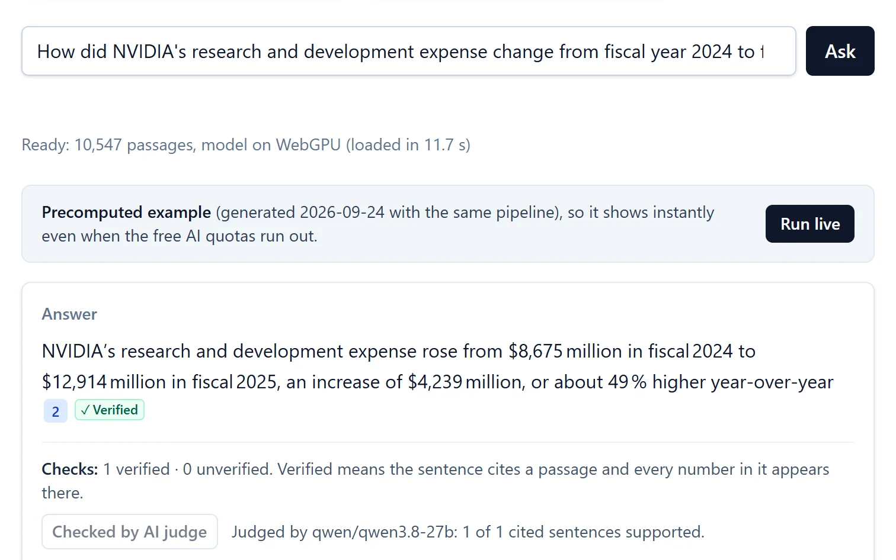

01 RAG · Retrieval & grounding
FilingLens
Citation-verified Q&A over SEC 10-K filings. Every answer sentence cites the passage it came from, sentences the sources don't support are flagged, and questions the filings can't answer are declined.
- Recall@10
- 85.5%
- Answer accuracy
- 82.9%
- Search latency
- 33 ms
held-out test split, 74 items
35-question test sample
median, in the browser
What I built
- Python ingestion of 24 filings from 12 companies with structure-aware chunking, then hybrid search: BM25 and dense embeddings fused with Reciprocal Rank Fusion, plus company and fiscal-year filters.
- A deterministic verifier that runs in the browser: a sentence is verified only if it cites a passage and every number in it appears there. An optional AI judge agrees with reference labels 95.5% of the time (κ 0.86).
- A Cloudflare Worker gateway with a provider fallback chain (Workers AI → Groq → Gemini), a KV answer cache, a Turnstile bot check, and rate limits. It runs for $0, with no vector database.
- A 211-question eval set, split dev/test before tuning. CI fails any push that drops recall@10 by more than 2 points.
- Python
- TypeScript
- BM25
- bge-small (ONNX, q8)
- RRF
- Cloudflare Workers
- Playwright
- GitHub Actions
| Retrieval setup | Recall@10 |
|---|---|
| Hybrid + filters shipped | 85.5% |
| + cross-encoder rerank | 80.1% |
| Dense only | 79.7% |
| BM25 only | 73.3% |
| No metadata filters | 72.6% |
| Fixed 350-token chunks | 69.9% |
What didn't work: a cross-encoder reranker lowered recall@10 by 5 points on test and took about 7 s per query in WASM, so it stayed out of production.